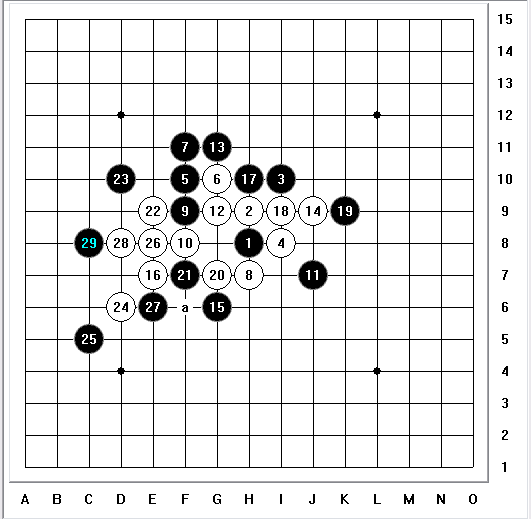
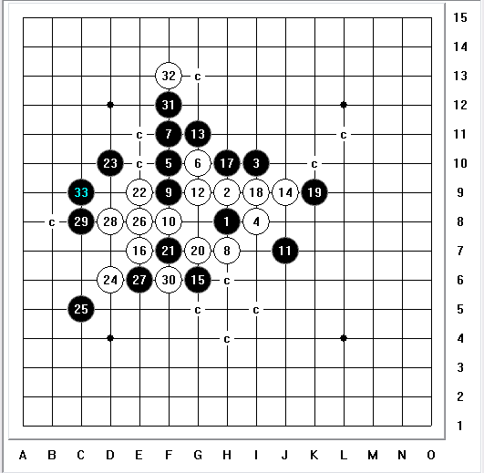

连珠终结者残疾人系列题目开讲了。
#1 连珠终结者残疾人系列题目开讲了。 作者：极地剑客 发表时间：2012-6-15 23:20:30
1楼简介：此课题专收集bug或者难杀题目为主。［ 黄药师 于 2012-6-15 23:21:27 时花20金币送鲜花一朵］
［ 黄药师 于 2012-6-15 23:21:27 时花20金币送鲜花一朵］
［ 黄药师 于 2012-6-15 23:21:27 时花20金币送鲜花一朵］
［ 黄药师 于 2012-6-15 23:21:27 时花20金币送鲜花一朵］
［ 黄药师 于 2012-6-15 23:21:27 时花20金币送鲜花一朵］
［ 黄药师 于 2012-6-15 23:21:27 时花20金币送鲜花一朵］
［ 黄药师 于 2012-6-15 23:21:27 时花20金币送鲜花一朵］
［ 黄药师 于 2012-6-15 23:21:27 时花20金币送鲜花一朵］
［ 黄药师 于 2012-6-15 23:21:27 时花20金币送鲜花一朵］
［ 黄药师 于 2012-6-15 23:21:27 时花20金币送鲜花一朵］
［ 黄药师 于 2012-6-15 23:21:27 时花20金币送鲜花一朵］
［ 逆刃 于 2012-6-15 23:46:01 时花20金币送鲜花一朵］
［ 逆刃 于 2012-6-15 23:46:01 时花20金币送鲜花一朵］
［ 逆刃 于 2012-6-15 23:46:01 时花20金币送鲜花一朵］
［ 屏蔽 于 2012-6-16 7:37:07 时奖励此帖[金币加 100 威望加1］
［ 灯塔连珠 于 2012-6-16 19:44:44 时花20金币送鲜花一朵］
［ 灯塔连珠 于 2012-6-16 19:44:44 时花20金币送鲜花一朵］
［ 灯塔连珠 于 2012-6-16 19:44:44 时花20金币送鲜花一朵］
［ 失落刀 于 2012-6-17 20:34:08 时花20金币送鲜花一朵］
［ 失落刀 于 2012-6-17 20:34:08 时花20金币送鲜花一朵］
［ 失落刀 于 2012-6-17 20:34:08 时花20金币送鲜花一朵］
［ 失落刀 于 2012-6-17 20:34:08 时花20金币送鲜花一朵］
［ 失落刀 于 2012-6-17 20:34:08 时花20金币送鲜花一朵］
［ 失落刀 于 2012-6-17 20:34:08 时花20金币送鲜花一朵］
［ 失落刀 于 2012-6-17 20:34:08 时花20金币送鲜花一朵］
［ 失落刀 于 2012-6-17 20:34:08 时花20金币送鲜花一朵］
#2 Re:连珠终结者残疾人系列题目开讲了。 作者：极地剑客 发表时间：2012-6-15 23:21:45
此题，目测90%的人终结者中着，跨度各个版本。
#3 Re:连珠终结者残疾人系列题目开讲了。 作者：极地剑客 发表时间：2012-6-15 23:24:57
37手终结者算不出秒杀？目测残疾。。。，中着程度80%
#4 Re:连珠终结者残疾人系列题目开讲了。 作者：极地剑客 发表时间：2012-6-15 23:27:06
目测bug程度不在第一题之下。
楼下欢迎各种变态题目投稿，慢慢更新，一次发出来不好玩了。
另外中枪的来点个顶了~
#5 Re:连珠终结者残疾人系列题目开讲了。 作者：逆刃 发表时间：2012-6-15 23:48:57
第一题，不勾选“容错搜索”出现bug解，勾选之后竟然是正解，根据以往的经验，勾选之后出现bug的概率比较大，这次恰恰相反了。。。［此帖子已被 逆刃 在 2012-6-15 23:52:31 编辑过］
#6 Re:连珠终结者残疾人系列题目开讲了。 作者：逆刃 发表时间：2012-6-15 23:54:54
==============================
此帖内容被屏蔽!
==============================
此帖被逆刃 屏蔽于 2012-6-15 23:55:40并-20金币
#7 Re:逆刃【==Re:连珠终结者残疾人系列题目开讲了。==】 作者：极地剑客 发表时间：2012-6-15 23:55:16
引用：
原文由 逆刃 发表于 2012-6-15 23:48:57 :
第一题，不勾选“容错搜索”出现bug解，勾选之后竟然是正解，根据以往的经验，勾选之后出现bug的概率比较大，这次恰恰相反了。。。第二题，5秒出正解；第三题，24算了三分钟算不出，停止计算了，28在20秒左右可以计算出来。
楼上不厚道啊，你怎么能把明教专用调试无bug残疾终结者说出来咧。
第三题你无聊了，本身要求算24的，而且好几种杀法。28已经是最后一步了，算的话，果断无压力。
速度丢几个变态残疾题目上来撒
#8 Re:连珠终结者残疾人系列题目开讲了。 作者：极地剑客 发表时间：2012-6-15 23:58:22
目测算不出杀的残疾90%。
#9 Re:连珠终结者残疾人系列题目开讲了。 作者：逆刃 发表时间：2012-6-15 23:58:44
额，又搞混乱了，看来我的终结者需要整顿两天了。变态题目单纯依靠终结者计算根本没用啊。
先来个中级的，你测试下。。
#10 Re:连珠终结者残疾人系列题目开讲了。 作者：极地剑客 发表时间：2012-6-16 0:02:18
楼上nonono，就单纯测试终结者的撒。不涉及没vct的。所以不存在为难终结者啊，“变态题目单纯依靠终结者计算根本没用啊。”选的都是能1分钟内能杀的。黑石bug题目就不丢了，大都是禁手问题，没意思，那才叫为难黑石。#11 Re:连珠终结者残疾人系列题目开讲了。 作者：极地剑客 发表时间：2012-6-16 0:08:16
题目选用规则，必须是终结者能杀的（主要是测试一些人设置不当而造成杀不出，或者bug而导致败了），而不是没v的~#12 Re:逆刃【==Re:连珠终结者残疾人系列题目开讲了。==】 作者：极地剑客 发表时间：2012-6-16 0:19:05
引用：这个7秒。
原文由 逆刃 发表于 2012-6-15 23:58:44 :额，又搞混乱了，看来我的终结者需要整顿两天了。变态题目单纯依靠终结者计算根本没用啊。
先来个中级的，你测试下。。
#13 Re:连珠终结者残疾人系列题目开讲了。 作者：极地剑客 发表时间：2012-6-16 0:30:10
终结者版本：
如果依然杀不出，则继续降低难度提示32一步测试：
代码贴不上来，32-m5［此帖子已被 极地剑客 在 2012-6-16 0:32:00 编辑过］
［此帖子已被 极地剑客 在 2012-6-16 0:33:26 编辑过］
#14 Re:连珠终结者残疾人系列题目开讲了。 作者：极地剑客 发表时间：2012-6-16 1:14:40
逆刃中级题目放个正解，终结者中枪，没杀出来#15 Re:连珠终结者残疾人系列题目开讲了。 作者：换你一笑 发表时间：2012-6-16 8:31:26
外溪月几个错杀，我记得很清楚。。。
我也不知道是软件中毒了咋滴，老原来拆的时候，出现各种BUG，后面才发现地毯是地毯，后面还有一堆的路要走。
还有两个是终结者的自杀，但是终结者扫的是胜
这个27明显是必败的嘛，我的终结者说杀了，我倒。。。
必胜的27塞中间就够了撒，虽然白棋可能还要挣扎记下。
#16 Re:连珠终结者残疾人系列题目开讲了。 作者：换你一笑 发表时间：2012-6-16 8:43:42
这个29让我的终结者搞笑了，白30冲四过后，出现了十几个错杀，黑棋的33手直接就走的33，呃，表示不冲四之前，那个点确实必胜。
虽然出现BUG这个棋还是必胜的，16必败，两个17都能地毯，个人感觉另外的一个17更容易，但是这个17好在可以地毯两个16
摆下正确的思路
努力赚威望中，真想把上图的错杀截图过来，十几个都是错的啊，壮观，呵呵。
［ 失落刀 于 2012-6-17 17:33:02 时奖励此帖[金币加 100 威望加1］
#17 Re:连珠终结者残疾人系列题目开讲了。 作者：忧郁的双眼 发表时间：2012-6-16 11:06:29
这是病人与病人之间的交流啊~#18 Re:连珠终结者残疾人系列题目开讲了。 作者：自来水 发表时间：2012-6-16 14:12:50
巨汗。。。#19 Re:连珠终结者残疾人系列题目开讲了。 作者：极地剑客 发表时间：2012-6-16 14:22:34
表示怀疑逆刃题目是bug题目～无正解无真相～#20 Re:极地剑客【==Re:连珠终结者残疾人系列题目开讲了。==】 作者：极地剑客 发表时间：2012-6-16 18:27:33
额～原来是刚清除终结者注册表忘记设置回来了，默认距离6，改成15，毫无压力了～#21 Re:忧郁的双眼【==Re:连珠终结者残疾人系列题目开讲了。==】 作者：aabb 发表时间：2012-6-16 19:21:06
引用：
原文由 忧郁的双眼 发表于 2012-6-16 11:06:29 :
这是病人与病人之间的交流啊~

#22 Re:连珠终结者残疾人系列题目开讲了。 作者：灯塔连珠 发表时间：2012-6-16 19:56:56
极地剑客最好把你认为最好的设置放到这里让大家跟着学习一下。#23 Re:灯塔连珠【==Re:连珠终结者残疾人系列题目开讲了。==】 作者：极地剑客 发表时间：2012-6-16 21:03:34
参考这个，ShowPost.asp?ThreadID=17089，还可以。#24 Re:极地剑客【==Re:灯塔连珠【==Re:连珠终结者残疾人系列题目开讲了。==】==】 作者：黄药师 发表时间：2012-6-16 21:52:02
引用：求09 10 版本设置！
原文由 极地剑客 发表于 2012-6-16 21:03:34 :
参考这个，ShowPost.asp?ThreadID=17089，还可以。
#25 Re:黄药师【==Re:极地剑客【==Re:灯塔连珠【==Re:连珠终结者残疾人系列题目开讲了。==】==】==】 作者：极地剑客 发表时间：2012-6-16 22:25:21
09.10据说不给力，反正你是正版，不如用2012啊（点使用准确算杀设置）。挺稳定的，虽然好像杀棋慢一点。#26 Re:连珠终结者残疾人系列题目开讲了。 作者：黄药师 发表时间：2012-6-16 22:57:56
2012？？？？？有吗？
#27 Re:黄药师【==Re:连珠终结者残疾人系列题目开讲了。==】 作者：极地剑客 发表时间：2012-6-17 3:15:39
引用：哦，那就2011。之前看终结者板块区有说这个厉害的
原文由 黄药师 发表于 2012-6-16 22:57:56 :2012？？？？？有吗？
#28 Re:连珠终结者残疾人系列题目开讲了。 作者：极地剑客 发表时间：2012-6-17 21:55:24
15，16楼是不是开了容错了～要不就是距离短了～正常的没出这些bug杀啊～#29 Re:连珠终结者残疾人系列题目开讲了。 作者：陶涛业余 发表时间：2012-6-20 16:31:40
这个题，不知道有没有办法能防止这样的错误出现，
求下一手白胜，几乎所有终结者都一秒钟中招，简单的给出H7的错杀。
这个题目是有V的，但是不是H7这么简单的错杀。
请大神私下指点迷津 QQ 867064817 
［此帖子已被 陶涛业余 在 2012-6-20 16:36:03 编辑过］
#30 Re:陶涛业余【==Re:连珠终结者残疾人系列题目开讲了。==】 作者：极地剑客 发表时间：2012-6-20 20:57:03
引用：
原文由 陶涛业余 发表于 2012-6-20 16:31:40 :这个题，不知道有没有办法能防止这样的错误出现，
求下一手白胜，几乎所有终结者都一秒钟中招，简单的给出H7的错杀。
这个题目是有V的，但是不是H7这么简单的错杀。
请大神私下指点迷津 QQ 867064817
［此帖子已被 陶涛业余 在 2012-6-20 16:36:03 编辑过］
#31 Re:连珠终结者残疾人系列题目开讲了。 作者：极地剑客 发表时间：2012-6-20 20:57:35
#32 Re:连珠终结者残疾人系列题目开讲了。 作者：极地剑客 发表时间：2012-6-20 20:58:11
另外出问题那位的设置讲座都快2年没更新了～速度更新了～#33 Re:连珠终结者残疾人系列题目开讲了。 作者：omnne 发表时间：2012-6-20 23:09:44
所有题目都测试了，貌似都是10秒内算出杀，假杀那几个也没有，难道我是完美版finisher
#34 Re:连珠终结者残疾人系列题目开讲了。 作者：极地剑客 发表时间：2012-6-21 3:04:39
楼上2，4，8.9，13的杀法摆出来看看#35 Re:连珠终结者残疾人系列题目开讲了。 作者：极地剑客 发表时间：2012-6-21 3:05:06
额，2，4，6，9，13楼#36 Re:omnne【==Re:连珠终结者残疾人系列题目开讲了。==】 作者：陶涛业余 发表时间：2012-6-21 11:07:03
引用：大神求指教
原文由 omnne 发表于 2012-6-20 23:09:44 :所有题目都测试了，貌似都是10秒内算出杀，假杀那几个也没有，难道我是完美版finisher
#37 Re:极地剑客【==Re:陶涛业余【==Re:连珠终结者残疾人系列题目开讲了。==】==】 作者：陶涛业余 发表时间：2012-6-21 11:08:03
你真的给出正确的杀了吗。。。求指点啊。。。
#38 Re:陶涛业余【==Re:极地剑客【==Re:陶涛业余【==Re:连珠终结者残疾人系列题目开讲了。==】==】==】 作者：极地剑客 发表时间：2012-6-21 12:44:07
31楼毫无压力～求防御［ 空恨社小仙 于 2012-6-21 14:36:15 时花20金币送鲜花一朵］
#39 Re:极地剑客【==Re:陶涛业余【==Re:极地剑客【==Re:陶涛业余【==Re:连珠终结者残疾人系列题目开讲了。==】==】==】==】 作者：陶涛业余 发表时间：2012-6-23 14:10:47
引用：人脑毫无压力，终结者表示压力很大
原文由 极地剑客 发表于 2012-6-21 12:44:07 :
31楼毫无压力～求防御［ 空恨社小仙 于 2012-6-21 14:36:15 时花20金币送鲜花一朵］

#40 Re:陶涛业余【==Re:极地剑客【==Re:陶涛业余【==Re:极地剑客【==Re:陶涛业余【==Re:连珠终结者残疾人系列题目开讲了。==】==】==】==】==】 作者：极地剑客 发表时间：2012-6-23 18:22:24
不是人脑，你用08无压力。#41 Re:极地剑客【==连珠终结者残疾人系列题目开讲了。==】 作者：白衣神童小剑魔 发表时间：2012-7-31 11:33:36
大家看看会不会出现这个12误杀，目测误杀率不低
一路白攻崩，结果：

#42 Re:极地剑客【==Re:连珠终结者残疾人系列题目开讲了。==】 作者：五子棋专家 发表时间：2013-2-24 20:28:22
第25手K13，可以杀